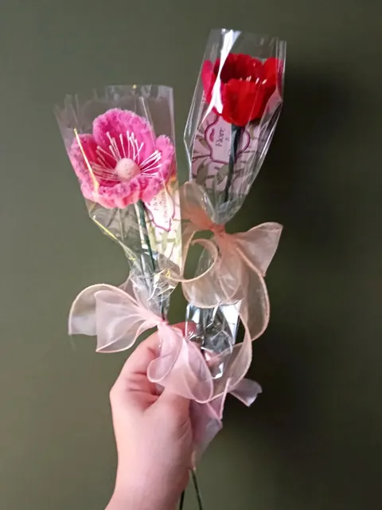

Conseils & savoir-faire
Le prix d’un bouquet en fil chenille
Chez Flore & Chenilles, le calcul est simple : 8 € par fleur. Voici ce que comprend ce prix, et ce qui est offert.
En images


Une fleur à 8 €, c’est…
- Du temps : chaque pétale est plié, torsadé et ajusté à la main.
- Des fils chenille choisis pour leur qualité et leur durabilité.
- Une tige de fer, pour que la fleur se tienne bien droite.
- Du scotch de masquage, pour assembler et habiller la tige.
- De la colle, pour que chaque détail tienne longtemps.
- Du maquillage, pour donner aux pétales leurs douces nuances.
- Un emballage : une pochette transparente fermée d’un nœud.
- Et plein d’amour.
Le prix d’un bouquet
Un bouquet coûte 8 € par fleur, et le feuillage est offert. Les bouquets présentés en vase sont livrés avec leur vase, offert. Quelques exemples :
- Roses blanches et roses : 2 fleurs, 16 €.
- Roses flamboyantes : 4 fleurs, 32 €.
- Bouquet mauve et violet : 7 fleurs, 56 €.
- Bouquet rose tendre : 11 fleurs, 88 €, vase offert.

Ce qui est offert, ce qui est en option
- Offerts : l’emballage (pochette transparente et nœud) et la carte de vœux personnalisée.
- Offert : le vase des bouquets présentés en vase, le petit pot des petites fleurs en pot.
- En option : une fleur à l’unité fixée à l’intérieur d’un bocal transparent, pour 5 € de plus.
- Retrait gratuit à l’atelier, ou livraison : 5 € jusqu’à 15 km, 10 € jusqu’à 25 km autour de Signy-l’Abbaye.
Composer son propre bouquet
Dans Votre bouquet à vous, le prix s’affiche au fur et à mesure que vous ajoutez des fleurs : 8 € par fleur, le feuillage est offert.
Quelques créations
Les autres conseils
Les fleurs de l’atelier
- Rose en fil chenille
- Tulipe en fil chenille
- Lys en fil chenille
- Gerbera en fil chenille
- Pavot et coquelicot en fil chenille
- Arum en fil chenille
- Hortensia en fil chenille
- Tournesol en fil chenille
- Muguet en fil chenille
- Lavande en fil chenille
- Jonquille en fil chenille
- Marguerite en fil chenille
- Pensée en fil chenille